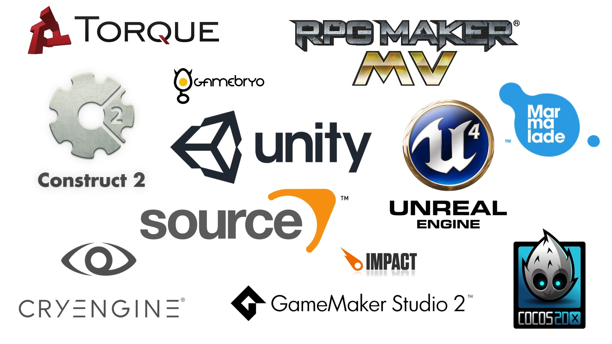

Создание игр — это довольно сложный процесс, но давай во всём разберёмся.
Большие студии создают игры в больших командах, где каждый работает над своей задачей (3D моделирование, программирование, создание концепт артов или звуковых эффектов).Но новичку будет достаточно лишь одного ноутбука или компьютера и парочки интересных идей. К счастью, в последние годы произошёл скачок популярности инди-игр (игры, созданные одним человеком или небольшой командой).
Любая игра работает на так называемом игровом движке. Это комплекс программ, с помощью которых обеспечивается графическая визуализация, звуковое сопровождение и т.д. Такие игры как Half-life 2, Counter-strike и Portal работают на игровом движке Source. Поэтому у них так много общего в плане физики, графики и игрового процесса. Игровые студии тратят большое количество времени на создание собственных движков, либо покупают уже существующие программы у других студий, что недёшево. Но в наше время существует множество независимых и бесплатных движков, на которых создаются популярные проекты. Это подводит нас к первому выбору, который должен сделать начинающий разработчик.

А выбрать есть из чего. И у каждого есть свои сильные и слабые стороны. Здесь представлены самые популярные. В этом гайде мы будем работать на Unity. Он позволяет создавать 2D и 3D игры, которые можно экспортировать на множество платформ. В настоящее время он является самым популярным среди инди разработчиков. На нём созданы Hearthstone, Superhot, Rust и огромное количество других игр. Также он широко используется разработчиками мобильных игр. В целом Unity прекрасно подходит для новичков из-за его разнообразия. Писать код на этом движке можно на C# или же JavaScript. Так что всё, чему ты научишься в Unity будет легко применимо и в других программах. Ну а теперь ты можешь приступать к созданию своей собственной игры